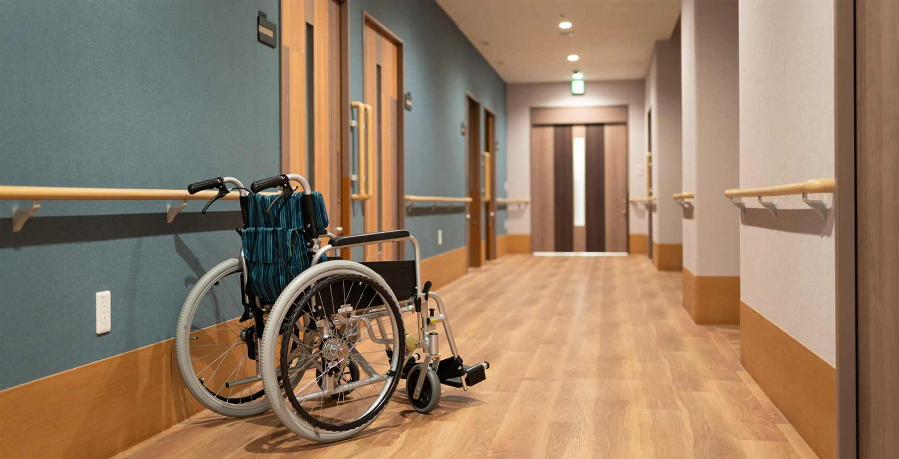

Case Studies
コンサルティング事例
介護経営パートナーズがご支援した施設の、具体的な改善事例をご紹介します。

赤字のサービス付き高齢者向け住宅を事業譲渡後に再建
施設の年間収支
－1,740万円 → ＋1,580万円
年間売上
4,856万円 → 1億1,622万円
1室あたりの月額単価
約17万円 → 約34万円
引き継ぎ前の状況
入居率は98%とほぼ満室でしたが、事業譲渡前の2020年度は売上4,856万円に対して1,740万円の赤字でした。譲渡直前の1か月でも、売上372万円に対して189万円の赤字が出ていました。入居者の平均要介護度は1.3と軽く、介護保険の利用は限度額の約17%にとどまっていました。必要な介助の多くを無料サービスや自費サービスで提供していたため、介護の手間はかかっているのに売上にならない状態でした。人件費は売上の95%に達し、派遣職員の費用もかかっていました。
取り組み
まず、住宅としての生活支援サービスと、介護保険の訪問介護の役割を整理しました。無料・自費で行っていた介助は、入居者ごとに必要なサービスを洗い出し、ケアマネジャー・ご家族と調整したうえで介護保険の訪問介護に切り替えました。保険が使えるため、入居者の自己負担を増やさずに売上を確保できます。夜間の訪問介護など、介護度が上がっても住み続けられる体制を整え、重度の方の受け入れも進めました。人員体制は派遣に頼らない形に見直しました。運営開始から1年4か月後には、お泊りにも対応するデイサービスを併設し、住まい・訪問・通いを一体で提供できるようにしています。
改善の流れ
| 時期 | 年間売上 | 施設の収支 | 主な出来事 |
|---|---|---|---|
| 譲渡前（2020年度） | 4,856万円 | －1,740万円（－35.8%） | 前運営法人の部門別決算 |
| 譲渡直前の1か月 | 372万円（月） | －189万円（月） | 入居率98%、介護保険の利用は限度額の約17% |
| 1期目（10か月） | 4,739万円 | －198万円（－4.2%） | 運営開始。自費・無料の介助を介護保険の訪問介護へ切り替え |
| 1期目（12か月換算） | 5,687万円 | －238万円（－4.2%） | 10か月の実績を12か月分に換算した参考値 |
| 2期目 | 7,237万円 | ＋15万円（＋0.2%） | 収支がほぼ均衡。期の途中でデイサービスを開設 |
| 3期目 | 1億297万円 | ＋1,161万円（＋11.3%） | 訪問介護・デイサービスとも黒字に |
| 4期目 | 1億1,622万円 | ＋1,580万円（＋13.6%） | 4期連続の増収 |
施設の収支は、役員報酬など法人全体の経費（本部経費）を除いた、施設（住宅・訪問介護・通所介護）単位の収支です。運営開始後は税理士法人作成の確定決算の数値です。1室あたりの月額単価は、家賃・食費などと介護保険サービスを合わせた入居者1人あたりの月間売上で、運営開始月から4期目終盤までに97%上がりました。
デイサービスの新規立ち上げ：開設から2年半で利用回数8倍
月ののべ利用回数
44回 → 355回
月の利用者数
9人 → 28人
月の売上
49万円 → 351万円
数字は開設月・各年12月・直近月の値。介護保険の請求データ（サービス提供月ベース）より集計。
立ち上げの方針
「リビング＆カフェ」をコンセプトに、自宅のように自由に過ごせるデイサービスとして開設しました。併設する住宅の入居者の日中の居場所になると同時に、地域の在宅の方も受け入れています。お泊りにも対応し、ご家族の夜間の介護負担を減らしたい方、退院後すぐには自宅に戻れない方、特別養護老人ホームなどの空きを待っている方の受け皿にしました。
取り組み
職員会議を週1回以上開き、新しく利用される方の受け入れ準備や現場の困りごとを、その週のうちに決めて解決する運営にしました。食事イベントなどの催しを企画し、普段の利用日以外にも来ていただくきっかけをつくりました。介護度の重い方も受け入れられる体制を整え、平均要介護度は開設翌月の2.1から2.4に上がっています。
結果
開設から6か月間の赤字は合計48万円にとどめ、2年目から黒字に転換しました。2年目の部門収支は＋180万円、3年目は売上3,311万円で＋150万円です。開設翌月に月49万円だった売上は、2年半後には月351万円になりました。
利用回数・利用者数・月の売上は介護保険の請求データ（サービス提供月ベース）で、開設月（2023年12月）または開設翌月と2026年8月の比較です。部門収支は確定決算の部門別収支で、本部経費を除いた数値です。